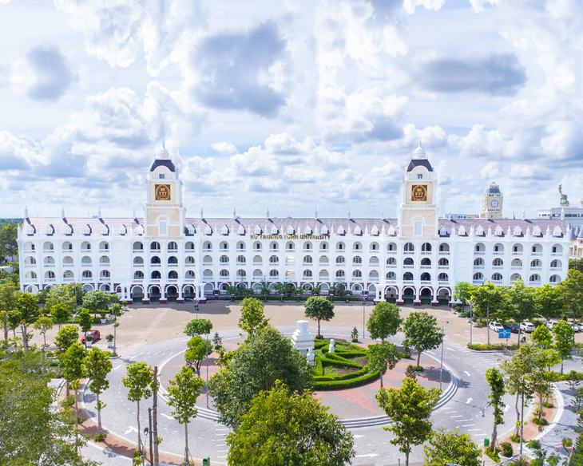

Trường Đại học Võ Trường Toản là một đại học tư thục tại thành phố Cần Thơ, Việt Nam, được thành lập ngày 18 tháng 2 năm 2008. Trường đào tạo đa ngành - đa lĩnh vực, tập trung vào các ngành phục vụ cho kinh tế mũi nhọn của tỉnh Hậu Giang là công nghiệp, nông nghiệp và dịch vụ du lịch. Đây là trường đại học đầu tiên được thành lập tại tỉnh Hậu Giang (cũ). Trường được xây dựng theo mô hình "Thành phố đại học" mang phong cách châu Âu trên diện tích 20 hecta và được ví như cung điện châu Âu độc nhất vô nhị ở Việt Nam.